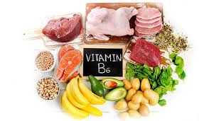
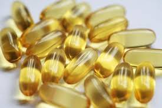

វីតាមីនបេ៦ (ពីរីដុកស៊ីន) ឬវីតាមីនសាច់ដុំ មានតួនាទីពិសេស ចូលរួមក្នុងមេតាបូលីស ជួយបង្កើតថាមពល ជួយប្រព័ន្ធការពាររាងកាយ និងជំនួយសាច់ដុំជាដើម។ ខាងក្រោមនេះ គឺជាបញ្ជាក់ជូនពីការចូលរួមរបស់វីតាមីនបេ៦ ចំពោះសុខភាព ។
-ចូលរួមក្នុងមេតាបូលីស ៖ វីតាមីនបេ៦ មានតួនាទីសំខាន់ នៅក្នុងដំណើរការមេតាបូលីសរបស់សារធាតុប្រូតេអ៊ីន និង អាស៊ីដអាមីនេ ដែលប្រើប្រាស់ជាសារធាតុដើម ក្នុងការបង្កើតជាសារធាតុប្រសាទនីរ៉ូត្រង់ស្មែតទ័រ ។
វីតាមីនបេ៦ (ពីរីដុកស៊ីន) ឬវីតាមីនសាច់ដុំ មានតួនាទីពិសេស ចូលរួមក្នុងមេតាបូលីស ជួយបង្កើតថាមពល ជួយប្រព័ន្ធការពាររាងកាយ និងជំនួយសាច់ដុំជាដើម។ ខាងក្រោមនេះ គឺជាបញ្ជាក់ជូនពីការចូលរួមរបស់វីតាមីនបេ៦ ចំពោះសុខភាព ។
-ចូលរួមក្នុងមេតាបូលីស ៖ វីតាមីនបេ៦ មានតួនាទីសំខាន់ នៅក្នុងដំណើរការមេតាបូលីសរបស់សារធាតុប្រូតេអ៊ីន និង អាស៊ីដអាមីនេ ដែលប្រើប្រាស់ជាសារធាតុដើម ក្នុងការបង្កើតជាសារធាតុប្រសាទនីរ៉ូត្រង់ស្មែតទ័រ ។-ជួយបង្កើតថាមពល ៖ វីតាមីនបេ៦ ជាអ្នកបំបែរសារធាតុគ្លីកូហ្សែន (ជាតិស្ករដែលស្ដុកទុក) ឱ្យទៅជាថាមពល ។
-ជួយប្រព័ន្ធការពាររាងកាយ ៖ វីតាមីនបេ៦ ជួយធ្វើឱ្យប្រសើរឡើងនូវប្រសិទ្ធភាពនៃប្រព័ន្ធការពាររាងកាយ ដោយសម្រួលដល់ការផលិតអង្គបដិបក្ខប្រាណសម្រាប់ការពាររាងកាយ ។
-ជួយសាច់ដុំ ៖ វីតាមីនបេ៦ គឺជួយកាត់បន្ថយកម្រិតតានតឹង និងការកន្ដ្រាក់សាច់ដុំ និងការឈឺចាប់សាច់ដុំនៃសារពាង្គកាយរបស់យើង ។
នៅក្នុងមួយថ្ងៃ លោកអ្នកគួរតែទទួលទានវីតាមីនបេ៦ ក្នុងបរិមាណចំនួន១,៨ មីលីក្រាមសម្រាប់បុរស, ១,៥ មីលីក្រាម សម្រាប់ស្ដ្រី និងចំនួន២,២ មីលីក្រាម សម្រាប់មនុស្សវ័យចំណាស់។ ហើយតួលេខនេះអាចកើនឡើងដល់ទៅ២៥មីលីក្រាម ទៅតាមករណីដោយឡែកផ្សេងទៀត។
កង្វះវីតាមីនបេ៦ នាំឱ្យប៉ះពាល់ដល់សុខភាពរួមមាន ដូចជាអស់កម្លាំង ស្លេកស្លាំង វិលមុខ តានតឹងអារម្មណ៍ ប្រកាច់ ព្រមទាំងវិបត្ដិប្រព័ន្ធប្រសាទខ្លាំង ឬ តិចតួចជាដើម។
ចំណីអាហារ ដែលសម្បូរវីតាមីនបេ៦ គឺសាច់ត្រី គ្រាប់ធញ្ញជាតិ បន្លែបៃតង និងផ្លែឈើ ស្រូវសាឡី និងមេស្រាបៀ ។ ក្រុមមនុស្សដែលត្រូវការជំនួយបន្ថែមពីវីតាមីនបេ៦ គឺ ស្ដ្រីដែលកំពុងតែប្រើប្រាស់ថ្នាំគ្រាប់ពន្យារកំណើត ស្ដ្រីពពោះដែលមានអាការក្អួតចង្អោរ និងអ្នកដែលកើតក្រួសក្នុងតម្រងនោម ៕
 កាត់បន្ថយឱកាសនៃជំងឺមហារីក វីតាមីន B6 ដើរតួនាទីយ៉ាងសំខាន់ក្នុងការលូតលាស់ និងការអភិវឌ្ឍន៍កោសិកាដែលមានសុខភាពល្អ។ ការស្រាវជ្រាវបង្ហាញថា កង្វះរបស់វាត្រូវបានផ្សារភ្ជាប់ជាមួយនឹងការរលាក និងជំងឺរ៉ាំរ៉ៃដែលទាក់ទងនឹងការរលាក ដូចជាជំងឺរលាកសន្លាក់ឆ្អឹងជាដើម។
សារធាតុចិញ្ចឹមដ៏សំខាន់នេះក៏ជួយឱ្យរាងកាយរបស់អ្នករក្សាកម្រិតធម្មតានៃ homocysteine អាស៊ីតអាមីណូដែលជួយបង្កើតប្រូតេអ៊ីន ប៉ុន្តែក៏អាចនាំឱ្យមានការកកឈាម ឬស្ទះសរសៃឈាមផងដែរ ប្រសិនបើកម្រិតខ្ពស់ពេក។ ភ័ស្តុតាងមួយចំនួនណែនាំថាកម្រិតវីតាមីន B6 ទាបក្នុងឈាមអាចជាប់ទាក់ទងនឹងហានិភ័យខ្ពស់នៃការស្លាប់ដោយសារជំងឺសរសៃឈាម ប៉ុន្តែថ្នាំគ្រាប់មិនទាន់ត្រូវបានបង្ហាញដើម្បីកាត់បន្ថយហានិភ័យនៃជំងឺបេះដូង ឬជំងឺដាច់សរសៃឈាមខួរក្បាលនោះទេ។
 កាត់បន្ថយហានិភ័យនៃជំងឺភ្នែក ការស្រាវជ្រាវបានបង្ហាញថាការបន្ថែមវីតាមីន B6 អាស៊ីតហ្វូលិក និង B12 ប្រចាំថ្ងៃអាចកាត់បន្ថយហានិភ័យនៃជំងឺភ្នែកឡើងបាយដែលទាក់ទងនឹងអាយុ (AMD) ។ នៅក្នុងការសិក្សាមួយ អ្នកចូលរួមសិក្សា ស្ត្រីដែលប្រើថ្នាំគ្រាប់ទាំងនេះជារៀងរាល់ថ្ងៃសម្រាប់រយៈពេលប្រាំពីរឆ្នាំមានហានិភ័យទាបជាង AMD ។ វីតាមីន B6 ចូលរួមក្នុងការផលិតសារធាតុបញ្ជូនសរសៃប្រសាទ ដូចជា serotonin ដែលអាចជួយគ្រប់គ្រងអារម្មណ៍ និងថែមទាំងជួយឱ្យគេងលក់ស្រួលទៀតផង។ ការស្រាវជ្រាវមួយចំនួនបានបង្ហាញថាកម្រិតខ្ពស់នៃ B6 អាចមានប្រសិទ្ធភាពក្នុងការកាត់បន្ថយការថប់បារម្ភ និងបញ្ហាអារម្មណ៍ផ្សេងទៀត។ ការសិក្សាដ៏ធំមួយបានបង្ហាញថា ការទទួលទានវីតាមីន B6 ខ្ពស់ត្រូវបានផ្សារភ្ជាប់ជាមួយនឹងការថយចុះ ការធ្លាក់ទឹកចិត្ត និង ហានិភ័យ ថប់បារម្ភ ចំពោះស្ត្រី ប៉ុន្តែមិនមែនបុរសទេ។ ថ្មីៗនេះ អ្នកវិទ្យាសាស្ត្រក៏បានរកឃើញថា មនុស្សវ័យជំទង់មានអារម្មណ៍ថា មិនសូវមានការថប់បារម្ភ និងធ្លាក់ទឹកចិត្ត បន្ទាប់ពីបានប្រើវីតាមីន B6 supplements កម្រិតខ្ពស់ជារៀងរាល់ថ្ងៃ អស់រយៈពេលមួយខែ។